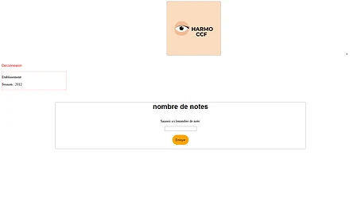
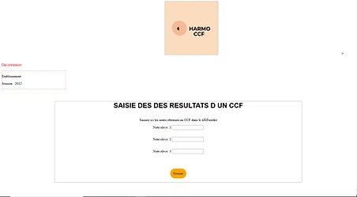
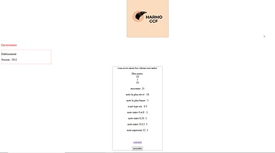

Projet scolaire · 2020
HarmoCCF
Une application web de saisie de notes qui calcule les moyennes et enregistre les résultats.
Parcours dans l’application







Contexte
Ce projet pédagogique mettait en pratique la création de formulaires, le traitement des données côté serveur et leur stockage en base.
Conception et développement
-
Conception des écrans
Définition des formulaires de connexion et de saisie de notes.
-
Traitement PHP
Traitement des notes saisies et calcul des moyennes.
-
Stockage et restitution
Enregistrement dans MySQL et affichage des résultats.